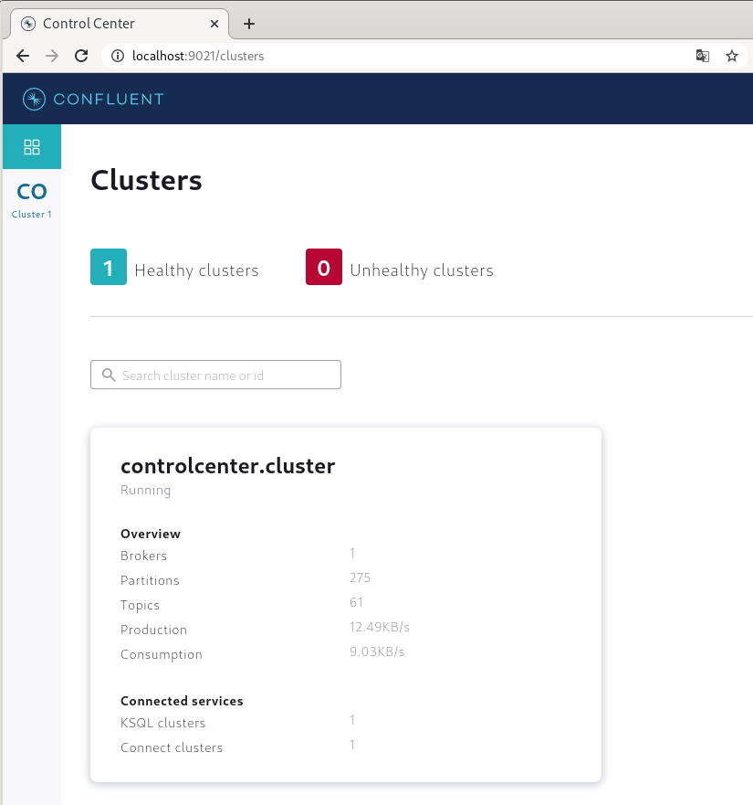
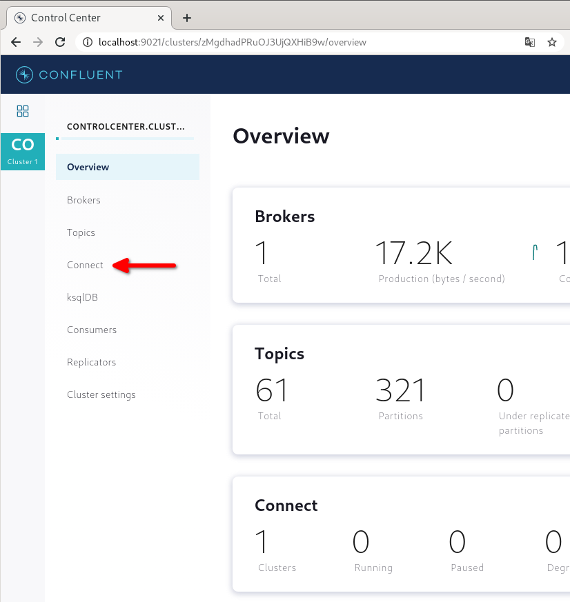
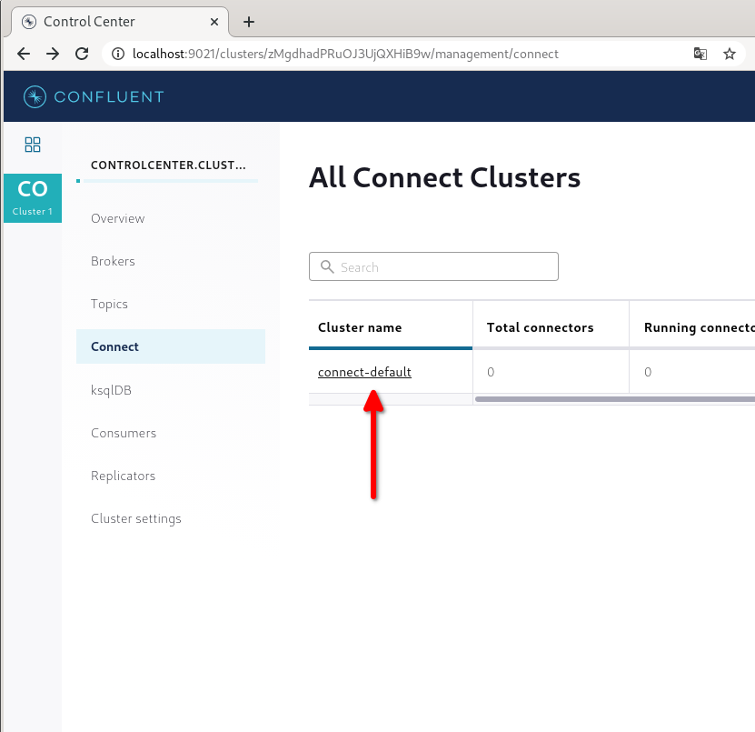
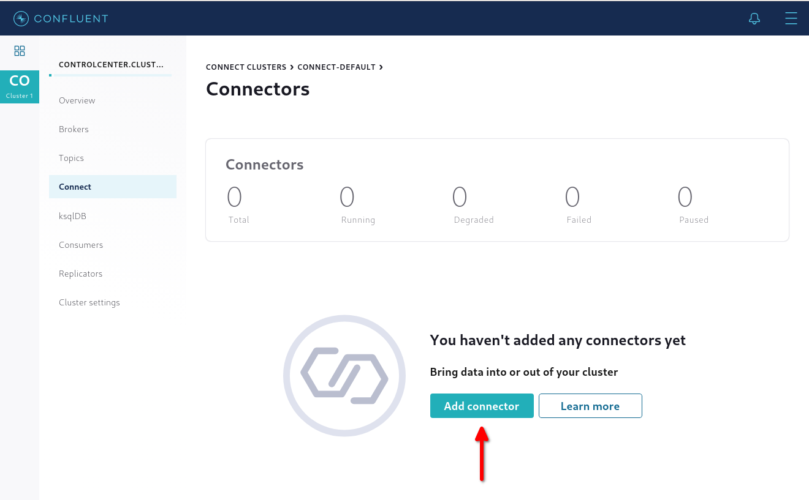
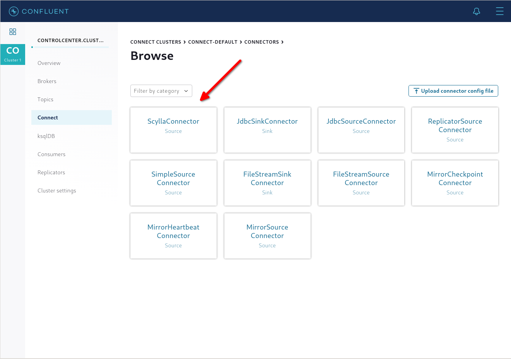
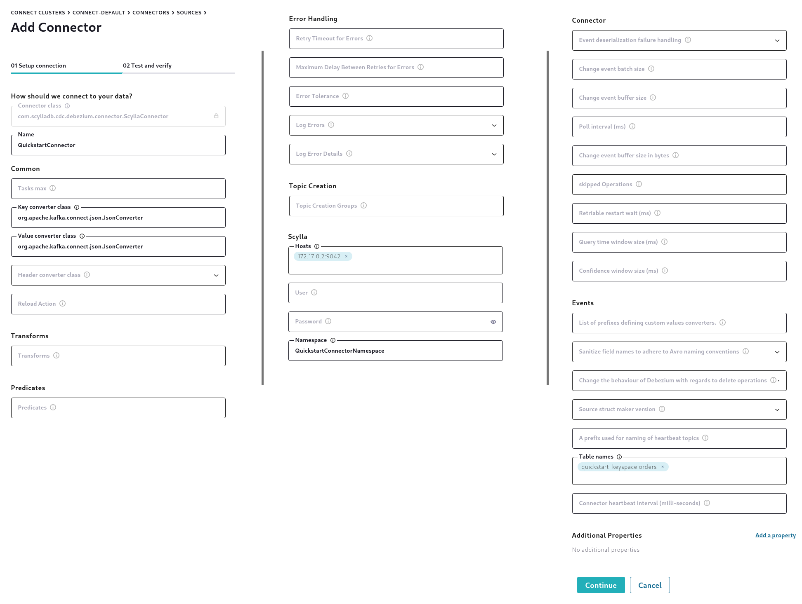
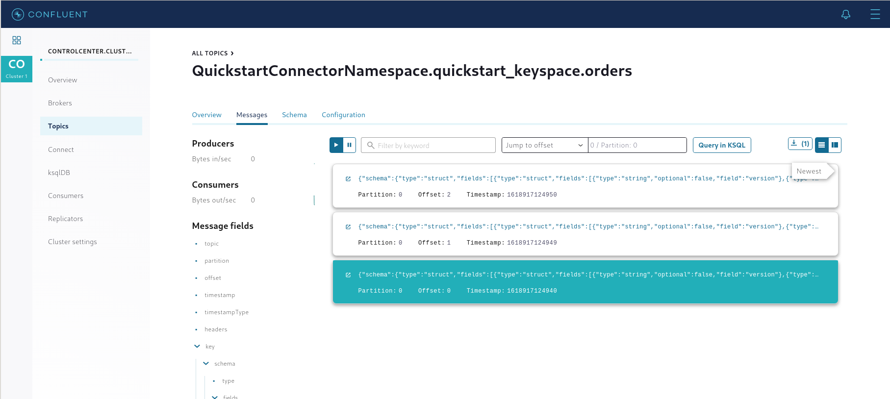

Was this page helpful?
ScyllaDB CDC Source Connector Quickstart¶
Synopsis¶
This quickstart will show you how to setup the ScyllaDB CDC Source Connector to replicate changes made in a ScyllaDB table using ScyllaDB CDC.
ScyllaDB setup¶
First, let’s setup a ScyllaDB cluster and create a CDC-enabled table.
ScyllaDB installation¶
For the purpose of this quickstart, we will configure a ScyllaDB instance using Docker. You can skip this section if you have already installed ScyllaDB. To learn more about installing and configuring ScyllaDB in production environments, please refer to the Getting Started guide.
Using Docker, follow the instructions to launch ScyllaDB.
Start the Docker container, replacing the
--nameand--host nameparameters with your own information. For example:docker run --name scylla-cdc-quickstart --hostname scylla-cdc-quickstart -d scylladb/scylla docker run --name scylla-cdc-quickstart-2 --hostname scylla-cdc-quickstart-2 -d scylladb/scylla --seeds="$(docker inspect --format='{{ .NetworkSettings.IPAddress }}' scylla-cdc-quickstart)" docker run --name scylla-cdc-quickstart-3 --hostname scylla-cdc-quickstart-3 -d scylladb/scylla --seeds="$(docker inspect --format='{{ .NetworkSettings.IPAddress }}' scylla-cdc-quickstart)"
Run
docker psto show the exposed ports. The output should be similar to this example:docker ps CONTAINER ID IMAGE COMMAND CREATED STATUS PORTS NAMES b72f341f53c0 scylladb/scylla "/docker-entrypoint.…" 12 seconds ago Up 11 seconds 22/tcp, 7000-7001/tcp, 9042/tcp, 9160/tcp, 9180/tcp, 10000/tcp scylla-cdc-quickstart-3 e1ac1ccb4d12 scylladb/scylla "/docker-entrypoint.…" 16 seconds ago Up 15 seconds 22/tcp, 7000-7001/tcp, 9042/tcp, 9160/tcp, 9180/tcp, 10000/tcp scylla-cdc-quickstart-2 f1668fba1e7b scylladb/scylla "/docker-entrypoint.…" About a minute ago Up About a minute 22/tcp, 7000-7001/tcp, 9042/tcp, 9160/tcp, 9180/tcp, 10000/tcp scylla-cdc-quickstart
Creating a CDC-enabled table¶
Let’s connect to your ScyllaDB cluster and create a new CDC-enabled table. We will create an example table by issuing the following CQL query and insert some example data:
CREATE KEYSPACE quickstart_keyspace WITH REPLICATION = {'class': 'NetworkTopologyStrategy', 'replication_factor': 3};
CREATE TABLE quickstart_keyspace.orders(
customer_id int,
order_id int,
product text,
PRIMARY KEY(customer_id, order_id)) WITH cdc = {'enabled': true};
INSERT INTO quickstart_keyspace.orders(customer_id, order_id, product) VALUES (1, 1, 'pizza');
INSERT INTO quickstart_keyspace.orders(customer_id, order_id, product) VALUES (1, 2, 'cookies');
INSERT INTO quickstart_keyspace.orders(customer_id, order_id, product) VALUES (1, 3, 'tea');
If you already have a table you wish to use, but it does not have CDC enabled, you can turn it on by using the following CQL query:
ALTER TABLE keyspace.table_name with cdc = {'enabled': true};
To learn more about ScyllaDB CDC, visit Change Data Capture (CDC) page.
Kafka setup¶
ScyllaDB CDC Source Connector works well with both open-source Kafka and Confluent Platform. In this quickstart we will show how to install the Confluent Platform and deploy the connector (applicable to both open-source Kafka and Confluent Platform).
Installing Confluent Platform¶
If you are new to Confluent, download Confluent Platform.
In the Download Confluent Platform section fill in your email address
Open the Select Deployment Type drop-down and select ZIP
Accept the Terms & Conditions and click DOWNLOAD FREE
You will receive an email with instructions. Download / move the file to the desired location
Continue with the setup following this document
Installing ScyllaDB CDC Source Connector¶
Download or build ScyllaDB CDC Source Connector using the project build instructions
Deploy the connector:
If you use Confluent Platform, move connector JAR files to the
share/javafolderIf you use open-source Kafka, make sure that
plugin.pathof Kafka Connect configuration contains the folder with connector JAR files
Connector configuration¶
After you have successfully configured ScyllaDB and Kafka, the next step is to configure the connector and start it up.
Configuration using Confluent Control Center¶
If you use Confluent Platform, the easiest way to configure and start up the ScyllaDB CDC Source Connector is to use Confluent Control Center web interface.
Open the Confluent Control Center. By default, it is started at port
9021:
Click on the cluster you want to start the connector in and open the “Connect” tab:

Click on the Kafka Connect cluster:

Click “Add connector”:

Click “ScyllaConnector (Source Connector)”:

Configure the connector. You need to fill in these required configuration parameters:
Name: the name of this configuration
Key converter class, value converter class: converters that determine the format of produced messages. You can read more about them at Kafka Connect Deep Dive – Converters and Serialization Explained
Hosts: contact points of ScyllaDB
Namespace: a unique name that identifies the ScyllaDB cluster and that is used as a prefix for all schemas, topics.
Table names: the names of CDC-enabled tables you want to replicate
For the quickstart example here are the values we will use:
Name:
QuickstartConnectorKey converter class, value converter class:
org.apache.kafka.connect.json.JsonConverterHosts:
172.17.0.2:9042(ScyllaDB started in Docker)Namespace:
QuickstartConnectorNamespaceTable names:
quickstart_keyspace.orders

Click “Continue” and “Launch”
After a short while, a new
QuickstartConnectorNamespace.quickstart_keyspace.orderstopic will be automatically created and inserted rows will be replicated. You can browse them by going to the “Topics” tab, selectingQuickstartConnectorNamespace.quickstart_keyspace.orderstopic, going to “Message” tab and inputting0to “Jump to offset” field:
Configuration using open-source Kafka¶
Start Kafka Connect standalone using this guide. You will have to create a
connector.propertiesfile with the following contents:name = QuickstartConnector connector.class = com.scylladb.cdc.debezium.connector.ScyllaConnector key.converter = org.apache.kafka.connect.json.JsonConverter value.converter = org.apache.kafka.connect.json.JsonConverter scylla.cluster.ip.addresses = 172.17.0.2:9042 scylla.name = QuickstartConnectorNamespace scylla.table.names = quickstart_keyspace.orders
After starting the connector, you can see the generated messages by using
kafka-console-consumertool:bin/kafka-console-consumer --bootstrap-server localhost:9092 --topic QuickstartConnectorNamespace.quickstart_keyspace.orders --from-beginning